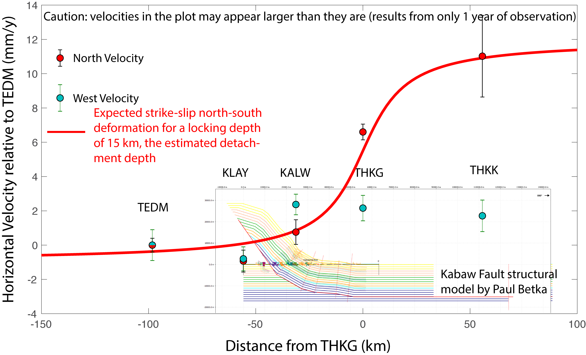
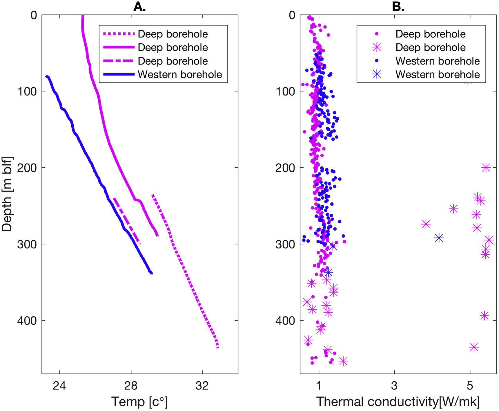
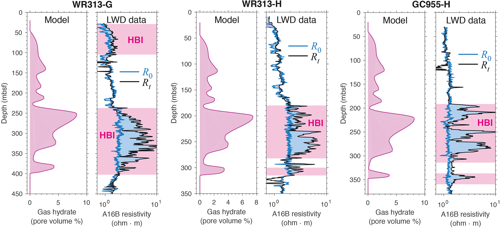

Long-term slab dip reduction linked to short-term extension and tsunami earthquakes
 I studied the unexpected and widespread extensional deformation observed in the upper plate following the Mw9.1 Tōhoku earthquake. In the 6 months following the mainshock nearly 2,000 aftershocks, most of which were extensional, were recorded in the upper plate (McKenzie & Jackson, 2012). Additionally, megathrust slip appeared to be related to co-seismic slip on a major normal splay fault in the upper plate. This co-seismic slip may have contributed to the tsunami’s anomalously large size (Tsuji et al., 2013). Surprisingly, all earthquakes that produce larger than expected tsunamis for their surface magnitude since the 1970s show similar aftershock patterns (McKenzie & Jackson, 2012; Polet & Kanamori, 2000). This special type of earthquake is termed a ‘tsunami earthquake’ (Kanamori, 1972).
Through numerical modeling, I showed that the upper plate stress state strongly depends on Myr- scale changes in slab dip. A progressive decrease in slab dip leads to a broad and deep region of extensional stresses due to bending. These stresses are sufficient to cause brittle yielding of a broad, shallow region of the upper plate. As observed in northern Japan following the Tōhoku event, I demonstrated that these extensional stresses are released only after a megathrust earthquake because of the quasi-instantaneous release of compressional stresses. I also showed that the largest modeled extensional stresses occured in a similar location to the major normal fault that was active during the Tōhoku earthquake, which helps explain the anomalously large tsunami size.
I studied the unexpected and widespread extensional deformation observed in the upper plate following the Mw9.1 Tōhoku earthquake. In the 6 months following the mainshock nearly 2,000 aftershocks, most of which were extensional, were recorded in the upper plate (McKenzie & Jackson, 2012). Additionally, megathrust slip appeared to be related to co-seismic slip on a major normal splay fault in the upper plate. This co-seismic slip may have contributed to the tsunami’s anomalously large size (Tsuji et al., 2013). Surprisingly, all earthquakes that produce larger than expected tsunamis for their surface magnitude since the 1970s show similar aftershock patterns (McKenzie & Jackson, 2012; Polet & Kanamori, 2000). This special type of earthquake is termed a ‘tsunami earthquake’ (Kanamori, 1972).
Through numerical modeling, I showed that the upper plate stress state strongly depends on Myr- scale changes in slab dip. A progressive decrease in slab dip leads to a broad and deep region of extensional stresses due to bending. These stresses are sufficient to cause brittle yielding of a broad, shallow region of the upper plate. As observed in northern Japan following the Tōhoku event, I demonstrated that these extensional stresses are released only after a megathrust earthquake because of the quasi-instantaneous release of compressional stresses. I also showed that the largest modeled extensional stresses occured in a similar location to the major normal fault that was active during the Tōhoku earthquake, which helps explain the anomalously large tsunami size.
Processing geodetic data from the IndoBurma subduction zone
I use geodetic data to assess the elastic and inelastic components of ongoing deformation of the Indo-Burma subduction zone in order to improve seismic hazard assessments for one of the most densely populated regions on earth. The Indo-Burma subduction zone is the onshore northern continuation of the Sumatra-Andaman subduction zone where the Indian plate is experiencing oblique subduction under the Burma plate (Steckler et al., 2016). Subduction occurs beneath the world’s largest delta, the Ganges-Brahmaputra Delta. Absorption of this ~19 km thick pile of deltaic sediments by the subduction has built a massive accretionary prism extending from eastern Bangladesh to western Myanmar. revious geodetic data collected in Bangladesh, Myanmar, and India point to the presence of a locked, shallowly-dipping megathrust with the potential to generate great earthquake (Steckler et al., 2016). Under the supervision of Prof. Michael Steckler, I am processing newly acquired GPS data from a network of 30 sites, including newly installed stations across the Indo-Burman mountain range. The preliminary vertical velocities I have calculated from these GPS sites agree with previous geodetic models of the subduction zone showing a shallowly-locked interface where elastic energy is accumulating. By processing all available geodetic data from the region, I aim to improve the simplified fault geometry of current models to better estimate the earthquake hazard for the subduction interface, and precisely estimate the stored elastic energy.
Heat flow of the Dead Sea basin
 I measured the heat flow of two ICDP boreholes that were drilled in the Dead Sea, Israel. I determined the heat flow using temperature profiles of the boreholes and by measuring 469 thermal conductivity measurements conducted on the cores themselves. I conducted these measurements in the IODP core repository in Bremen, Germany and in the Leibniz institute for applied geophysics in Hannover, Germany.Previous heat flow measurements of the Dead Sea basin determined a mean value of 32-40 mW/m^2 . These newly computed values are in agreement with previous values obtained for the Dead Sea basin and fall below the threshold of 50 mW/m^2 predicated to be the minimum heat flow for the basin to form as a pull-apart basin. This is known as The heat flow dilemma of the Dead Sea . Different explanations proposed to justify higher heat flow seem to fail leaving the paradox intact. Moreover, these newly computed heat flow values suggest that the sedimentary pile in the Dead Sea basin is thicker than previous estimates.
Glacial Cycles Influence Marine Methane Hydrate Formation
I joined a group of researchers and help them determine the porosity, sedimentation rate, gas hydrate depths, BSR depth, density and other properties of a Well GC955-H that was drilled in the Green Canyon region under the Gulf of Mexico Gas Hydrates Joint Industry Project in 2009. We then used these as an input for numerical models estimating the formation of gas hydrates in the borehole with time as a function of carbon input. We showed that hydrate forms in sediments with greater organic carbon content deposited during the penultimate glacial cycle (~120–240 ka). This match hydrate‐bearing intervals detected in three sites drilled on the northern Gulf of Mexico continental slope, supporting the hypothesis of hydrate formation driven by enhanced organic carbon burial during glacial lowstands.